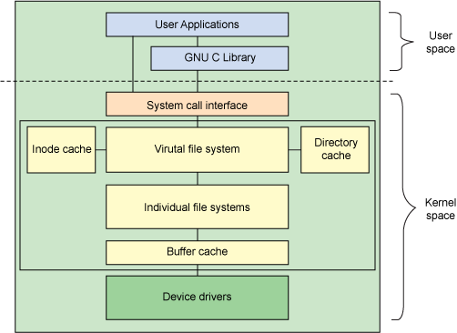

操作系统（七）文件管理（系统调用与文件存储）
第四章 文件管理（二）
文件系统操作
整体架构
在文件系统和应用程序间有一层抽象层，称为虚拟文件系统（VFS）
- VFS作为抽象层向应用层提供了统一的文件接口（read，write等）
- VFS实现了一些公共的功能，如Directory Cache和Page Cache等
- 规范了接口
VFS向应用层提供统一接口，具体实现不同文件系统有不同实现，VFS将函数指针指向对应函数

核心操作
文件系统的注册
在Linux中，具体文件系统通常是一个内核模块，在内核模块被加载时完成文件系统的注册
磁盘挂载
将dentry修改为挂载点，增加上级目录inode项
打开文件
用户层面：传入路径，打开模式；返回文件句柄fd
系统层面：PCB创建fd，指向打开文件表（open file table）中对应内容
具体实现：
- 应用程序调用 open 系统调用，该调用需要提供文件名和打开模式等参数。
- 操作系统查找保存在内存的打开文件表（open file table）中是否有该文件，如果该文件表项已经存在（例如已经打开），则检查打开模式是否允许重复打开（例如 O_EXCL），如果不允许则直接返回该文件表项，否则返回错误信息。
- 如果文件表项不存在，则分配一个新的文件表项（file）加入打开文件表，并将其与相应的 vnode 或 inode 相关联。
- 如果打开模式允许创建新文件（例如 O_CREAT），且文件不存在，则创建一个新的 vnode 或 inode，并将其与新的文件表项相关联。
- 操作系统将文件表项的状态设置为打开状态，并返回该文件表项的文件描述符（file descriptor）给应用程序。
- 应用程序可以使用返回的文件描述符对文件进行读写等操作。
- 当应用程序不再需要该文件时，可以使用 close 系统调用关闭文件，操作系统会释放相应的文件表项和 vnode 或 inode。
读取文件
用户层面：传入fd，buffer，size；返回实际读取到的字节数，buffer得到数据
系统层面：先访问pagecache，如果包含则从pagecache中读取，否则通过inode访问数据块，拷贝到pagecache然后拷贝到用户态buffer
读文件的流程如下（考虑缓存）：
- 应用程序发起读取文件的系统调用（read()）。
- 如果该文件已经被打开并且缓存在 Page cache 中，则直接从 Page cache 中读取文件数据，并返回给应用程序。如果 Page cache 中没有该文件的缓存，则进入下一步操作。
- 内核会在虚拟内存空间中分配一个缓冲区（buffer），用于存储文件数据。然后通过文件系统的 readpage() 回调函数，从磁盘上读取文件的一页数据，存储到缓冲区中。
- 如果读取成功，则将读取的数据存储到 Page cache 中，并返回读取的数据给应用程序。
- 如果读取失败，则返回错误码给应用程序。
- 应用程序继续读取下一页数据，直到读取完整个文件或者出现错误为止。
关键技术
缓存技术
将近期访问文件的inode缓存道内存中，空间满后通过LRU或LFU替换
预读算法
会比请求的数据块多读一些数据。触发条件是：
- 当有多个地址连续的读请求时
- 当访问到有预读标记的缓存时
快照与克隆技术
快照实现文件的可读备份，有两种方法，一种是写时拷贝（COW），在做完快照后第一次对文件写会拷贝文件内容
另一种是写时重定位（ROW），原始文件写数据时不在原有位置，而是分配一个新位置，更新逻辑地址和实际位置对应关系
克隆实现文件的可写备份，多用ROW实现，和快照区别是可写，数据隔离
Page Cache
Page cache 是 Linux 系统中的一种缓存机制，用于缓存文件系统中的数据和元数据。Page cache 以物理页的形式保存在内存中，每个物理页通常大小为 4KB 或 8KB，对应一个虚拟页（VMA）。
Page cache 包含以下内容：
- 文件数据：Page cache 用于缓存文件系统中的数据，例如读取的文件内容。文件数据通常保存在匿名页（anonymous page）中，即没有对应的文件，只保存数据。当读取文件时，内核会将文件数据从磁盘读入匿名页中，并将该匿名页添加到 Page cache 中。
- 文件元数据：Page cache 还用于缓存文件系统中的元数据，例如文件属性、索引节点等。文件元数据通常保存在映射页（mapped page）中，即与文件系统中的文件或目录关联。当访问文件元数据时，内核会将该映射页从磁盘读入 Page cache 中。
- Page 缓存清单：Page cache 中保存了所有 Page 缓存页的清单，每个页都有一个 struct page 结构体来描述。该结构体包含了页框地址、引用计数、状态等信息，同时还保存了与该页相关联的 vnode 或 inode 等信息。
Page cache 通常存储在操作系统内核的地址空间中，通过 page struct 结构体来表示。Page cache 通过页面映射（page mapping）和内存管理单元（MMU）机制，将虚拟页映射到物理页，实现了高效的文件系统访问。同时，Page cache 的引入也避免了频繁的磁盘访问，提高了文件系统的性能
日志型存储
日志型存储（Log-Structured Storage）是一种文件系统存储方式，其特点是将所有文件数据写入到一个连续的、循环的、预先分配好的日志区域（Log）中，而非传统的随机分散的数据块中。
日志区域中的每个写操作都会被记录到一个日志（Log）中，这个日志记录了文件系统的所有操作，包括创建、删除、修改文件等操作。当文件系统崩溃或重启时，文件系统会依据日志中记录的操作，恢复文件系统的状态。
日志型存储的优点是：
- 写性能较高：由于所有的写操作都是顺序写入到一个连续的日志区域中，因此写性能比传统的文件系统更高。
- 可靠性高：由于所有的写操作都是顺序写入到一个连续的日志区域中，并且每个写操作都被记录到一个日志中，因此即使文件系统发生故障，也可以通过日志来恢复文件系统的状态，数据不容易丢失。
- 压缩效果好：由于所有文件数据都是顺序写入到一个连续的日志区域中，因此可以采用更高效的压缩算法来减少磁盘空间的使用。
但是，日志型存储也有其缺点，主要包括：
- 读性能相对较低：由于文件数据是顺序存储的，因此随机读取数据的性能相对较低。
- 文件删除和空间回收不容易：由于文件数据是顺序存储的，因此删除一个文件时，需要从日志中找到该文件的所有数据块，并标记为已删除，这个过程比较繁琐。而空间回收也需要扫描整个日志，找到所有已删除的数据块，并将其标记为可用空间。
日志型存储主要应用于需要较高写性能和可靠性的场景，例如数据库存储、分布式存储等。常见的日志型文件系统包括Log-structured File System（LFS）、WAFL、Ext3cow等。
EXT文件系统
ext3相比ext2增加日志技术
ext4相比ext3增加extents技术，对于大文件通过保存起始位置和块数，减少大文件需要保存的元数据